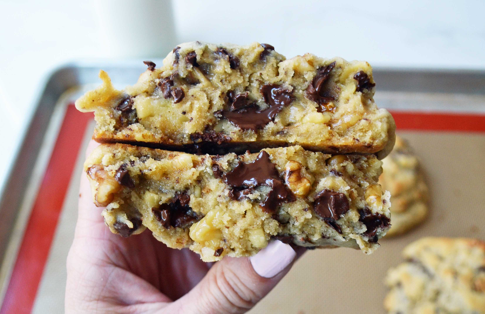

Cookies!
Go back to the home page!

Description:
This cookie recipe is a unique one, resulting in extremely chunky, gooey and soft cookies that are perfectly balanced in sweetness and saltiness.
You'll find this recipe extremely easy to follow along, quick to whip up and will quickly make you very popular at any gathering or event!
Ingredients:
- 1 cup of butter
- 1 cup brown sugar
- 1/2 cup sugar
- 2 eggs
- 3 cups flour
- 1 teaspoon cornstarch
- 3/4 teaspoon baking soda
- 3/4 teaspoon salt
- 2 cups chocolate chips
Steps:
- Preheat oven to 200 degrees
- Cream together the butter, sugar and brown sugar
- Add the eggs in one by one and mix well
- Stir in flour, cornstarch, baking soda and salt
- Stir in chocolate chips
- Separate dough into large balls and place on baking tray
- Bake 9-12 minutes or until golden